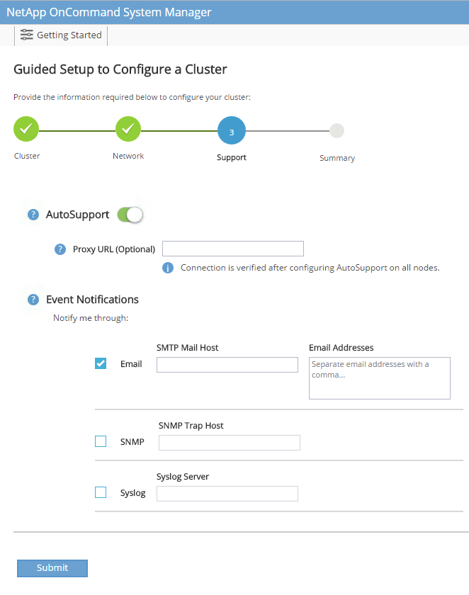

Définition de FlexPod
Définition de FlexPod
Procédure de déploiement du stockage NetApp (partie 1)
 Suggérer des modifications
Suggérer des modifications
Cette section décrit la procédure de déploiement du stockage NetApp AFF.
Installation de la gamme AFF C190 du contrôleur de stockage NetApp
NetApp Hardware Universe
L'application NetApp Hardware Universe (HWU) offre des composants matériels et logiciels pris en charge pour toute version ONTAP spécifique. Il fournit des informations de configuration pour toutes les appliances de stockage NetApp actuellement prises en charge par le logiciel ONTAP. Il fournit également un tableau des compatibilités de composants.
Vérifiez que les composants matériels et logiciels que vous souhaitez utiliser sont pris en charge avec la version de ONTAP que vous prévoyez d'installer :
Accédez au "HWU" application pour afficher les guides de configuration du système. Cliquez sur l'onglet contrôleurs pour afficher la compatibilité entre différentes versions du logiciel ONTAP et les appliances de stockage NetApp avec les spécifications souhaitées.
Vous pouvez également comparer les composants par appliance de stockage en cliquant sur Comparer les systèmes de stockage.
| Conditions préalables au contrôleur AFF C190 Series |
|---|
Pour planifier l'emplacement physique des systèmes de stockage, consultez le Hardware Universe NetApp. Reportez-vous aux sections suivantes :
|
Contrôleurs de stockage
Suivez les procédures d'installation physique des contrôleurs dans AFF "C190" Documentation :
NetApp ONTAP 9.6
Fiche de configuration
Avant d'exécuter le script d'installation, complétez la fiche de configuration du manuel du produit. La fiche de configuration est disponible dans le Guide d'installation du logiciel ONTAP 9.6.

|
Ce système est configuré en cluster à 2 nœuds sans commutateur. |
Le tableau suivant présente des informations sur l'installation et la configuration de ONTAP 9.6.
| Détail du cluster | Valeur des détails du cluster |
|---|---|
Adresse IP du nœud de cluster A |
<<var_NODEA_mgmt_ip>> |
Masque de réseau du nœud de cluster A |
<<var_NODEA_mgmt_mask>> |
Passerelle de nœud de cluster A |
<<var_NODEA_mgmt_Gateway>> |
Nom du nœud de cluster A |
<<var_NODEA>> |
Adresse IP du nœud B du cluster |
<<var_NodeB_mgmt_ip>> |
Masque de réseau du nœud B du cluster |
<<var_NodeB_mgmt_mask>> |
Passerelle de nœud B du cluster |
<<var_NodeB_mgmt_Gateway>> |
Nom du nœud B du cluster |
<<var_NodeB>> |
URL ONTAP 9.6 |
<<var_url_boot_software>> |
Nom du cluster |
<<var_clustername>> |
Adresse IP de gestion du cluster |
<<var_clustermgmt_ip>> |
Passerelle du cluster B |
<<var_clustermgmt_gateway>> |
Masque de réseau du cluster B. |
\<<var_clustermgmt_mask> |
Nom de domaine |
<<nom_domaine_var>> |
IP du serveur DNS (vous pouvez entrer plusieurs adresses) |
<var_dns_server_ip |
IP de serveur NTP (vous pouvez entrer plusieurs adresses) |
<<var_ntp_server_ip>> |
Configurez le nœud A
Pour configurer le nœud A, procédez comme suit :
-
Effectue la connexion au port console du système de stockage. Une invite chargeur-A s'affiche. Cependant, si le système de stockage est dans une boucle de redémarrage, appuyez sur Ctrl-C pour quitter la boucle AUTOBOOT lorsque le message suivant s'affiche :
Starting AUTOBOOT press Ctrl-C to abort…
Laissez le système démarrer.
autoboot
-
Appuyez sur Ctrl-C pour accéder au menu de démarrage.
Si ONTAP 9.6 n'est pas la version du logiciel en cours de démarrage, procédez comme suit pour installer le nouveau logiciel. Si ONTAP 9.6 est la version en cours de démarrage, sélectionnez les options 8 et y pour redémarrer le nœud. Ensuite, passez à l'étape 14. -
Pour installer un nouveau logiciel, sélectionnez l'option 7.
-
Entrez y pour effectuer une mise à niveau.
-
Sélectionnez e0M pour le port réseau que vous souhaitez utiliser pour le téléchargement.
-
Entrez y pour redémarrer maintenant.
-
Entrez l'adresse IP, le masque de réseau et la passerelle par défaut de e0M à leurs emplacements respectifs.
<<var_nodeA_mgmt_ip>> <<var_nodeA_mgmt_mask>> <<var_nodeA_mgmt_gateway>>
-
Entrez l'URL de l'emplacement du logiciel.
Ce serveur Web doit être accessible. <<var_url_boot_software>>
-
Appuyez sur entrée pour le nom d'utilisateur, indiquant aucun nom d'utilisateur.
-
Saisissez y pour définir le nouveau logiciel installé comme logiciel par défaut à utiliser pour les redémarrages suivants.
-
Entrez y pour redémarrer le nœud.
Lors de l'installation d'un nouveau logiciel, le système peut effectuer des mises à niveau du micrologiciel vers le BIOS et les cartes d'adaptateur, ce qui entraîne des redémarrages et des arrêts possibles à l'invite du chargeur-A. Si ces actions se produisent, le système peut différer de cette procédure. -
Appuyez sur Ctrl-C pour accéder au menu de démarrage.
-
Sélectionnez l'option 4 pour nettoyer la configuration et initialiser tous les disques.
-
Entrez y pour zéro disque, réinitialisez la configuration et installez un nouveau système de fichiers.
-
Entrez y pour effacer toutes les données des disques.
L'initialisation et la création de l'agrégat root peuvent prendre au moins 90 minutes, selon le nombre et le type de disques connectés. Une fois l'initialisation terminée, le système de stockage redémarre. Notez que l'initialisation des disques SSD prend beaucoup moins de temps. Vous pouvez continuer à utiliser la configuration du nœud B pendant que les disques du nœud A sont à zéro.
Lorsque le nœud A est en cours d'initialisation, commencez à configurer le nœud B.
Configurer le nœud B
Pour configurer le nœud B, procédez comme suit :
-
Effectue la connexion au port console du système de stockage. Une invite chargeur-A s'affiche. Cependant, si le système de stockage est dans une boucle de redémarrage, appuyez sur Ctrl-C pour quitter la boucle AUTOBOOT lorsque le message suivant s'affiche :
Starting AUTOBOOT press Ctrl-C to abort…
-
Appuyez sur Ctrl-C pour accéder au menu de démarrage.
autoboot
-
Appuyez sur Ctrl-C lorsque vous y êtes invité.
Si ONTAP 9.6 n'est pas la version du logiciel en cours de démarrage, procédez comme suit pour installer le nouveau logiciel. Si ONTAP 9.6 est la version en cours de démarrage, sélectionnez les options 8 et y pour redémarrer le nœud. Ensuite, passez à l'étape 14. -
Pour installer un nouveau logiciel, sélectionnez l'option 7.A.
-
Entrez y pour effectuer une mise à niveau.
-
Sélectionnez e0M pour le port réseau que vous souhaitez utiliser pour le téléchargement.
-
Entrez y pour redémarrer maintenant.
-
Entrez l'adresse IP, le masque de réseau et la passerelle par défaut de e0M à leurs emplacements respectifs.
<<var_nodeB_mgmt_ip>> <<var_nodeB_mgmt_ip>><<var_nodeB_mgmt_gateway>>
-
Entrez l'URL de l'emplacement du logiciel.
Ce serveur Web doit être accessible. <<var_url_boot_software>>
-
Appuyez sur entrée pour le nom d'utilisateur, indiquant aucun nom d'utilisateur.
-
Saisissez y pour définir le nouveau logiciel installé comme logiciel par défaut à utiliser pour les redémarrages suivants.
-
Entrez y pour redémarrer le nœud.
Lors de l'installation d'un nouveau logiciel, le système peut effectuer des mises à niveau du micrologiciel vers le BIOS et les cartes d'adaptateur, ce qui entraîne des redémarrages et des arrêts possibles à l'invite du chargeur-A. Si ces actions se produisent, le système peut différer de cette procédure. -
Appuyez sur Ctrl-C pour accéder au menu de démarrage.
-
Sélectionnez l'option 4 pour nettoyer la configuration et initialiser tous les disques.
-
Entrez y pour zéro disque, réinitialisez la configuration et installez un nouveau système de fichiers.
-
Entrez y pour effacer toutes les données des disques.
L'initialisation et la création de l'agrégat root peuvent prendre au moins 90 minutes, selon le nombre et le type de disques connectés. Une fois l'initialisation terminée, le système de stockage redémarre. Notez que l'initialisation des disques SSD prend beaucoup moins de temps.
Suite de la configuration du nœud A et de la configuration du cluster
À partir d'un programme de port de console connecté au port de console Du contrôleur de stockage A (nœud A), exécutez le script de configuration du nœud. Ce script apparaît lors du premier démarrage de ONTAP 9.6 sur le nœud.
|
|
La procédure de configuration du nœud et du cluster a été légèrement modifiée dans ONTAP 9.6. L'assistant d'installation du cluster est maintenant utilisé pour configurer le premier nœud d'un cluster. NetApp ONTAP System Manager (anciennement OnCommand® System Manager) est utilisé pour configurer le cluster. |
-
Suivez les invites pour configurer le nœud A.
Welcome to the cluster setup wizard. You can enter the following commands at any time: "help" or "?" - if you want to have a question clarified, "back" - if you want to change previously answered questions, and "exit" or "quit" - if you want to quit the cluster setup wizard. Any changes you made before quitting will be saved. You can return to cluster setup at any time by typing "cluster setup". To accept a default or omit a question, do not enter a value. This system will send event messages and periodic reports to NetApp Technical Support. To disable this feature, enter autosupport modify -support disable within 24 hours. Enabling AutoSupport can significantly speed problem determination and resolution should a problem occur on your system. For further information on AutoSupport, see: http://support.netapp.com/autosupport/ Type yes to confirm and continue {yes}: yes Enter the node management interface port [e0M]: Enter the node management interface IP address: <<var_nodeA_mgmt_ip>> Enter the node management interface netmask: <<var_nodeA_mgmt_mask>> Enter the node management interface default gateway: <<var_nodeA_mgmt_gateway>> A node management interface on port e0M with IP address <<var_nodeA_mgmt_ip>> has been created. Use your web browser to complete cluster setup by accessing https://<<var_nodeA_mgmt_ip>> Otherwise, press Enter to complete cluster setup using the command line interface: -
Accédez à l'adresse IP de l'interface de gestion du nœud.
La configuration du cluster peut également être effectuée au moyen de l'interface de ligne de commandes. Ce document décrit la configuration du cluster à l'aide d'une configuration assistée de System Manager. -
Cliquez sur installation assistée pour configurer le cluster.
-
Entrez
<<var_clustername>>pour les noms de cluster et<<var_nodeA>>et<<var_nodeB>>pour chacun des nœuds que vous configurez. Saisissez le mot de passe que vous souhaitez utiliser pour le système de stockage. Sélectionnez Switchless Cluster pour le type de cluster. Indiquez la licence de base du cluster. -
Vous pouvez également entrer des licences de fonctions pour Cluster, NFS et iSCSI.
-
Vous voyez un message de statut indiquant que le cluster est en cours de création. Ce message d'état passe en revue plusieurs États. Ce processus prend plusieurs minutes.
-
Configurez le réseau.
-
Désélectionnez l'option Plage d'adresses IP.
-
Entrez
<<var_clustermgmt_ip>>Dans le champ adresse IP de gestion du cluster,<<var_clustermgmt_mask>>Dans le champ masque réseau, et<<var_clustermgmt_gateway>>Dans le champ passerelle. Utilisez le … Sélecteur dans le champ Port pour sélectionner e0M du nœud A. -
L'IP de gestion des nœuds du nœud A est déjà renseignée. Entrez
<<var_nodeA_mgmt_ip>>Pour le nœud B. -
Entrez
<<var_domain_name>>Dans le champ Nom de domaine DNS. Entrez<<var_dns_server_ip>>Dans le champ adresse IP du serveur DNS.
Vous pouvez entrer plusieurs adresses IP de serveur DNS. -
Entrez
10.63.172.162Dans le champ serveur NTP principal.
Vous pouvez également entrer un autre serveur NTP. L'adresse IP 10.63.172.162de<<var_ntp_server_ip>>Est l'IP de gestion Nexus.
-
-
Configuration des informations de support.
-
Si votre environnement requiert un proxy pour accéder à AutoSupport, entrez l'URL dans l'URL du proxy.
-
Entrez l'hôte de messagerie SMTP et l'adresse électronique pour les notifications d'événements.
Vous devez au moins configurer la méthode de notification d'événement avant de pouvoir continuer. Vous pouvez sélectionner n'importe quelle méthode. 
Lorsque le système indique que la configuration du cluster est terminée, cliquez sur gérer le cluster pour configurer le stockage.
-
Suite de la configuration du cluster de stockage
Une fois la configuration des nœuds de stockage et du cluster de base terminée, vous pouvez poursuivre la configuration du cluster de stockage.
Zéro de tous les disques de spare
Pour mettre zéro tous les disques de spare du cluster, exécutez la commande suivante :
disk zerospares
Définissez la personnalité des ports UTA2 intégrés
-
Vérifiez le mode actuel et le type actuel des ports en exécutant le
ucadmin showcommande.AFF C190::> ucadmin show Current Current Pending Pending Admin Node Adapter Mode Type Mode Type Status ------------ ------- ------- --------- ------- --------- ----------- AFF C190_A 0c cna target - - online AFF C190_A 0d cna target - - online AFF C190_A 0e cna target - - online AFF C190_A 0f cna target - - online AFF C190_B 0c cna target - - online AFF C190_B 0d cna target - - online AFF C190_B 0e cna target - - online AFF C190_B 0f cna target - - online 8 entries were displayed. -
Vérifiez que le mode actuel des ports en cours d'utilisation est cna et que le type actuel est défini sur cible. Si ce n'est pas le cas, modifiez la personnalité du port à l'aide de la commande suivante :
ucadmin modify -node <home node of the port> -adapter <port name> -mode cna -type target
Les ports doivent être hors ligne pour exécuter la commande précédente. Pour mettre un port hors ligne, exécutez la commande suivante : network fcp adapter modify -node <home node of the port> -adapter <port name> -state down
Si vous avez modifié la personnalité du port, vous devez redémarrer chaque nœud pour que le changement prenne effet.
Renommez les interfaces logiques de gestion
Pour renommer les interfaces logiques de gestion (LIF), effectuez la procédure suivante :
-
Affiche les noms des LIF de gestion actuelles.
network interface show –vserver <<clustername>>
-
Renommer la LIF de gestion de cluster.
network interface rename –vserver <<clustername>> –lif cluster_setup_cluster_mgmt_lif_1 –newname cluster_mgmt
-
Renommez la LIF de gestion du nœud B.
network interface rename -vserver <<clustername>> -lif cluster_setup_node_mgmt_lif_AFF C190_B_1 -newname AFF C190-02_mgmt1
Définissez le rétablissement automatique sur la gestion du cluster
Définissez le paramètre de restauration automatique sur l'interface de gestion du cluster.
network interface modify –vserver <<clustername>> -lif cluster_mgmt –auto-revert true
Configurez l'interface réseau du processeur de service
Pour attribuer une adresse IPv4 statique au processeur de service sur chaque nœud, exécutez les commandes suivantes :
system service-processor network modify –node <<var_nodeA>> -address-family IPv4 –enable true –dhcp none –ip-address <<var_nodeA_sp_ip>> -netmask <<var_nodeA_sp_mask>> -gateway <<var_nodeA_sp_gateway>> system service-processor network modify –node <<var_nodeB>> -address-family IPv4 –enable true –dhcp none –ip-address <<var_nodeB_sp_ip>> -netmask <<var_nodeB_sp_mask>> -gateway <<var_nodeB_sp_gateway>>
|
|
Les adresses IP du processeur de service doivent se trouver dans le même sous-réseau que les adresses IP de gestion du nœud. |
Activez le basculement du stockage dans ONTAP
Pour vérifier que le basculement du stockage est activé, exécutez les commandes suivantes dans une paire de basculement :
-
Vérification de l'état du basculement du stockage
storage failover show
Les deux <<var_nodeA>>et<<var_nodeB>>doit pouvoir effectuer un basculement. Accédez à l'étape 3 si les nœuds peuvent effectuer un basculement. -
Activez le basculement sur l'un des deux nœuds.
storage failover modify -node <<var_nodeA>> -enabled true
L'activation du basculement sur un nœud l'active pour les deux nœuds. -
Vérifiez l'état de la HA du cluster à deux nœuds.
Cette étape ne s'applique pas aux clusters comptant plus de deux nœuds. cluster ha show
-
Passez à l'étape 6 si la haute disponibilité est configurée. Si la haute disponibilité est configurée, le message suivant s'affiche lors de l'émission de la commande :
High Availability Configured: true
-
Activez le mode HA uniquement pour le cluster à deux nœuds.
N'exécutez pas cette commande pour les clusters avec plus de deux nœuds, car cela entraîne des problèmes de basculement. cluster ha modify -configured true Do you want to continue? {y|n}: y -
Vérifiez que l'assistance matérielle est correctement configurée et modifiez, si nécessaire, l'adresse IP du partenaire.
storage failover hwassist show
Le message Keep Alive Status: Error:indique que l'un des contrôleurs n'a pas reçu d'alertes de maintien en service hwassist de la part de son partenaire, ce qui indique que l'assistance matérielle n'est pas configurée. Exécutez les commandes suivantes pour configurer l'assistance matérielle.storage failover modify –hwassist-partner-ip <<var_nodeB_mgmt_ip>> -node <<var_nodeA>> storage failover modify –hwassist-partner-ip <<var_nodeA_mgmt_ip>> -node <<var_nodeB>>
Créez un domaine de diffusion MTU de trames Jumbo dans ONTAP
Pour créer un domaine de diffusion de données avec un MTU de 9 9000, exécutez les commandes suivantes :
broadcast-domain create -broadcast-domain Infra_NFS -mtu 9000 broadcast-domain create -broadcast-domain Infra_iSCSI-A -mtu 9000 broadcast-domain create -broadcast-domain Infra_iSCSI-B -mtu 9000
Ne supprime pas le port de données du broadcast domain par défaut
Les ports de données 10 GbE sont utilisés pour le trafic iSCSI/NFS. Ces ports doivent être supprimés du domaine par défaut. Les ports e0e et e0f ne sont pas utilisés et doivent également être supprimés du domaine par défaut.
Pour supprimer les ports du broadcast domain, lancer la commande suivante :
broadcast-domain remove-ports -broadcast-domain Default -ports <<var_nodeA>>:e0c, <<var_nodeA>>:e0d, <<var_nodeA>>:e0e, <<var_nodeA>>:e0f, <<var_nodeB>>:e0c, <<var_nodeB>>:e0d, <<var_nodeA>>:e0e, <<var_nodeA>>:e0f
Désactiver le contrôle de flux sur les ports UTA2
Il est recommandé par NetApp de désactiver le contrôle de flux sur tous les ports UTA2 connectés à des périphériques externes. Pour désactiver le contrôle de flux, lancer la commande suivante :
net port modify -node <<var_nodeA>> -port e0c -flowcontrol-admin none
Warning: Changing the network port settings will cause a several second interruption in carrier.
Do you want to continue? {y|n}: y
net port modify -node <<var_nodeA>> -port e0d -flowcontrol-admin none
Warning: Changing the network port settings will cause a several second interruption in carrier.
Do you want to continue? {y|n}: y
net port modify -node <<var_nodeA>> -port e0e -flowcontrol-admin none
Warning: Changing the network port settings will cause a several second interruption in carrier.
Do you want to continue? {y|n}: y
net port modify -node <<var_nodeA>> -port e0f -flowcontrol-admin none
Warning: Changing the network port settings will cause a several second interruption in carrier.
Do you want to continue? {y|n}: y
net port modify -node <<var_nodeB>> -port e0c -flowcontrol-admin none
Warning: Changing the network port settings will cause a several second interruption in carrier.
Do you want to continue? {y|n}: y
net port modify -node <<var_nodeB>> -port e0d -flowcontrol-admin none
Warning: Changing the network port settings will cause a several second interruption in carrier.
Do you want to continue? {y|n}: y
net port modify -node <<var_nodeB>> -port e0e -flowcontrol-admin none
Warning: Changing the network port settings will cause a several second interruption in carrier.
Do you want to continue? {y|n}: y
net port modify -node <<var_nodeB>> -port e0f -flowcontrol-admin none
Warning: Changing the network port settings will cause a several second interruption in carrier.
Do you want to continue? {y|n}: y
Configurer le groupe d'interface LACP dans ONTAP
Ce type de groupe d'interface nécessite au moins deux interfaces Ethernet et un switch qui prend en charge LACP. assurez-vous qu'il est configuré en fonction des étapes décrites dans ce guide à la section 5.1.
Dans l'invite de cluster, effectuez la procédure suivante :
ifgrp create -node <<var_nodeA>> -ifgrp a0a -distr-func port -mode multimode_lacp network port ifgrp add-port -node <<var_nodeA>> -ifgrp a0a -port e0c network port ifgrp add-port -node <<var_nodeA>> -ifgrp a0a -port e0d ifgrp create -node << var_nodeB>> -ifgrp a0a -distr-func port -mode multimode_lacp network port ifgrp add-port -node <<var_nodeB>> -ifgrp a0a -port e0c network port ifgrp add-port -node <<var_nodeB>> -ifgrp a0a -port e0d
Configurer les trames Jumbo dans ONTAP
Pour configurer un port réseau ONTAP afin d'utiliser des trames jumbo (généralement avec un MTU de 9 9,000 octets), exécutez les commandes suivantes depuis le shell du cluster :
AFF C190::> network port modify -node node_A -port a0a -mtu 9000
Warning: This command will cause a several second interruption of service on
this network port.
Do you want to continue? {y|n}: y
AFF C190::> network port modify -node node_B -port a0a -mtu 9000
Warning: This command will cause a several second interruption of service on
this network port.
Do you want to continue? {y|n}: y
Créez des VLAN dans ONTAP
Pour créer des VLAN dans ONTAP, procédez comme suit :
-
Créez des ports VLAN NFS et ajoutez-les au domaine de broadcast de données.
network port vlan create –node <<var_nodeA>> -vlan-name a0a-<<var_nfs_vlan_id>> network port vlan create –node <<var_nodeB>> -vlan-name a0a-<<var_nfs_vlan_id>> broadcast-domain add-ports -broadcast-domain Infra_NFS -ports <<var_nodeA>>:a0a-<<var_nfs_vlan_id>>, <<var_nodeB>>:a0a-<<var_nfs_vlan_id>>
-
Créez des ports VLAN iSCSI et ajoutez-les au domaine de diffusion de données.
network port vlan create –node <<var_nodeA>> -vlan-name a0a-<<var_iscsi_vlan_A_id>> network port vlan create –node <<var_nodeA>> -vlan-name a0a-<<var_iscsi_vlan_B_id>> network port vlan create –node <<var_nodeB>> -vlan-name a0a-<<var_iscsi_vlan_A_id>> network port vlan create –node <<var_nodeB>> -vlan-name a0a-<<var_iscsi_vlan_B_id>> broadcast-domain add-ports -broadcast-domain Infra_iSCSI-A -ports <<var_nodeA>>:a0a-<<var_iscsi_vlan_A_id>>,<<var_nodeB>>:a0a-<<var_iscsi_vlan_A_id>> broadcast-domain add-ports -broadcast-domain Infra_iSCSI-B -ports <<var_nodeA>>:a0a-<<var_iscsi_vlan_B_id>>,<<var_nodeB>>:a0a-<<var_iscsi_vlan_B_id>>
-
Créez des ports MGMT-VLAN.
network port vlan create –node <<var_nodeA>> -vlan-name a0a-<<mgmt_vlan_id>> network port vlan create –node <<var_nodeB>> -vlan-name a0a-<<mgmt_vlan_id>>
Créez des agrégats de données dans ONTAP
Un agrégat contenant le volume root est créé lors du processus de setup ONTAP. Pour créer des agrégats supplémentaires, déterminez le nom de l'agrégat, le nœud sur lequel il doit être créé, ainsi que le nombre de disques qu'il contient.
Pour créer des agrégats, lancer les commandes suivantes :
aggr create -aggregate aggr1_nodeA -node <<var_nodeA>> -diskcount <<var_num_disks>> aggr create -aggregate aggr1_nodeB -node <<var_nodeB>> -diskcount <<var_num_disks>>
|
|
Conservez au moins un disque (sélectionnez le plus grand disque) dans la configuration comme disque de rechange. Il est recommandé d'avoir au moins une unité de rechange pour chaque type et taille de disque. |
|
|
Commencez par cinq disques ; vous pouvez ajouter des disques à un agrégat lorsque du stockage supplémentaire est requis. |
|
|
L'agrégat ne peut pas être créé tant que la remise à zéro du disque n'est pas terminée. Exécutez le aggr show commande permettant d'afficher l'état de création de l'agrégat. Ne pas continuer tant que aggr1_NODEA n'est pas en ligne.
|
Configurer le fuseau horaire dans ONTAP
Pour configurer la synchronisation de l'heure et pour définir le fuseau horaire sur le cluster, exécutez la commande suivante :
timezone <<var_timezone>>
|
|
Par exemple, dans l'est des États-Unis, le fuseau horaire est America/New_York. Après avoir commencé à saisir le nom du fuseau horaire, appuyez sur la touche Tab pour afficher les options disponibles. |
Configurez SNMP dans ONTAP
Pour configurer le SNMP, procédez comme suit :
-
Configurer les informations de base SNMP, telles que l'emplacement et le contact. Lorsqu'elle est interrogée, cette information est visible comme
sysLocationetsysContactVariables dans SNMP.snmp contact <<var_snmp_contact>> snmp location “<<var_snmp_location>>” snmp init 1 options snmp.enable on
-
Configurez les interruptions SNMP pour envoyer aux hôtes distants.
snmp traphost add <<var_snmp_server_fqdn>>
Configurez SNMPv1 dans ONTAP
Pour configurer SNMPv1, définissez le mot de passe secret partagé en texte brut appelé communauté.
snmp community add ro <<var_snmp_community>>
|
|
Utilisez le snmp community delete all commande avec précaution. Si des chaînes de communauté sont utilisées pour d'autres produits de surveillance, cette commande les supprime.
|
Configurez SNMPv3 dans ONTAP
SNMPv3 requiert la définition et la configuration d'un utilisateur pour l'authentification. Pour configurer SNMPv3, effectuez les étapes suivantes :
-
Exécutez le
security snmpusersCommande permettant d'afficher l'ID du moteur. -
Créez un utilisateur appelé
snmpv3user.security login create -username snmpv3user -authmethod usm -application snmp
-
Entrez l'ID du moteur de l'entité faisant autorité et sélectionnez md5 comme protocole d'authentification.
-
Lorsque vous y êtes invité, entrez un mot de passe de huit caractères minimum pour le protocole d'authentification.
-
Sélectionnez des comme protocole de confidentialité.
-
Entrez un mot de passe de huit caractères minimum pour le protocole de confidentialité lorsque vous y êtes invité.
Configurez AutoSupport HTTPS dans ONTAP
L'outil NetApp AutoSupport envoie à NetApp des informations de résumé du support via HTTPS. Pour configurer AutoSupport, lancer la commande suivante :
system node autosupport modify -node * -state enable –mail-hosts <<var_mailhost>> -transport https -support enable -noteto <<var_storage_admin_email>>
Créez un serveur virtuel de stockage
Pour créer une infrastructure de SVM (Storage Virtual machine), procédez comme suit :
-
Exécutez le
vserver createcommande.vserver create –vserver Infra-SVM –rootvolume rootvol –aggregate aggr1_nodeA –rootvolume-security-style unix
-
Ajoutez l'agrégat de données à la liste INFRA-SVM pour NetApp VSC.
vserver modify -vserver Infra-SVM -aggr-list aggr1_nodeA,aggr1_nodeB
-
Retirer les protocoles de stockage inutilisés du SVM, tout en conservant les protocoles NFS et iSCSI.
vserver remove-protocols –vserver Infra-SVM -protocols cifs,ndmp,fcp
-
Activer et exécuter le protocole NFS dans le SVM infra-SVM.
nfs create -vserver Infra-SVM -udp disabled
-
Allumez le
SVM vstorageParamètre du plug-in NetApp NFS VAAI. Ensuite, vérifiez que NFS a été configuré.vserver nfs modify –vserver Infra-SVM –vstorage enabled vserver nfs show
Les commandes sont préfaites par vserverEn ligne de commande, car les SVM étaient auparavant appelés vServers.
Configurez NFSv3 dans ONTAP
Le tableau suivant répertorie les informations nécessaires pour mener à bien cette configuration.
| Détails | Valeur de détail |
|---|---|
Hôte ESXi D'Une adresse IP NFS |
<<var_esxi_hostA_nfs_ip>> |
Adresse IP NFS de l'hôte ESXi B |
<<var_esxi_hostB_nfs_ip>> |
Pour configurer NFS sur le SVM, lancer les commandes suivantes :
-
Créez une règle pour chaque hôte ESXi dans la stratégie d'exportation par défaut.
-
Pour chaque hôte ESXi créé, attribuez une règle. Chaque hôte a son propre index de règles. Votre premier hôte ESXi dispose de l'index de règles 1, votre second hôte ESXi dispose de l'index de règles 2, etc.
vserver export-policy rule create –vserver Infra-SVM -policyname default –ruleindex 1 –protocol nfs -clientmatch <<var_esxi_hostA_nfs_ip>> -rorule sys –rwrule sys -superuser sys –allow-suid false vserver export-policy rule create –vserver Infra-SVM -policyname default –ruleindex 2 –protocol nfs -clientmatch <<var_esxi_hostB_nfs_ip>> -rorule sys –rwrule sys -superuser sys –allow-suid false vserver export-policy rule show
-
Assigner la export policy au volume root du SVM d'infrastructure.
volume modify –vserver Infra-SVM –volume rootvol –policy default
NetApp VSC gère automatiquement les règles d'exportation si vous choisissez de l'installer une fois vSphere configuré. Si vous ne l'installez pas, vous devez créer des règles d'export policy lorsque des serveurs Cisco UCS C-Series supplémentaires sont ajoutés.
Créez le service iSCSI dans ONTAP
Pour créer le service iSCSI sur le SVM, exécutez la commande suivante. Cette commande démarre également le service iSCSI et définit l'IQN iSCSI pour la SVM. Vérifiez que le protocole iSCSI a été configuré.
iscsi create -vserver Infra-SVM iscsi show
Créer un miroir de partage de charge du volume racine du SVM dans ONTAP
Pour créer un miroir de partage de charge du volume root du SVM dans ONTAP, effectuez les opérations suivantes :
-
Créer un volume pour être le miroir de partage de charge du volume root du SVM d'infrastructure sur chaque nœud.
volume create –vserver Infra_Vserver –volume rootvol_m01 –aggregate aggr1_nodeA –size 1GB –type DP volume create –vserver Infra_Vserver –volume rootvol_m02 –aggregate aggr1_nodeB –size 1GB –type DP
-
Créer un programme de travail pour mettre à jour les relations de miroir de volume racine toutes les 15 minutes.
job schedule interval create -name 15min -minutes 15
-
Créer les relations de mise en miroir.
snapmirror create -source-path Infra-SVM:rootvol -destination-path Infra-SVM:rootvol_m01 -type LS -schedule 15min snapmirror create -source-path Infra-SVM:rootvol -destination-path Infra-SVM:rootvol_m02 -type LS -schedule 15min
-
Initialisez la relation de mise en miroir et vérifiez qu'elle a été créée.
snapmirror initialize-ls-set -source-path Infra-SVM:rootvol snapmirror show
Configurez l'accès HTTPS dans ONTAP
Pour configurer un accès sécurisé au contrôleur de stockage, procédez comme suit :
-
Augmentez le niveau de privilège pour accéder aux commandes de certificat.
set -privilege diag Do you want to continue? {y|n}: y -
En général, un certificat auto-signé est déjà en place. Vérifiez le certificat en exécutant la commande suivante :
security certificate show
-
Pour chaque SVM affiché, le nom commun du certificat doit correspondre au FQDN DNS du SVM. Les quatre certificats par défaut doivent être supprimés et remplacés par des certificats auto-signés ou des certificats d'une autorité de certification.
La suppression de certificats expirés avant de créer des certificats est une bonne pratique. Exécutez le security certificate deletecommande permettant de supprimer les certificats expirés. Dans la commande suivante, utilisez L'option D'achèvement PAR ONGLET pour sélectionner et supprimer chaque certificat par défaut.security certificate delete [TAB] … Example: security certificate delete -vserver Infra-SVM -common-name Infra-SVM -ca Infra-SVM -type server -serial 552429A6
-
Pour générer et installer des certificats auto-signés, exécutez les commandes suivantes en tant que commandes à durée unique. Générer un certificat de serveur pour l'infra-SVM et le SVM de cluster. Là encore, utilisez la saisie AUTOMATIQUE PAR TABULATION pour vous aider à compléter ces commandes.
security certificate create [TAB] … Example: security certificate create -common-name infra-svm.netapp.com -type server -size 2048 -country US -state "North Carolina" -locality "RTP" -organization "NetApp" -unit "FlexPod" -email-addr "abc@netapp.com" -expire-days 3650 -protocol SSL -hash-function SHA256 -vserver Infra-SVM
-
Pour obtenir les valeurs des paramètres requis à l'étape suivante, exécutez la commande Security Certificate show.
-
Activez chaque certificat qui vient d'être créé à l'aide de
–server-enabled trueet–client-enabled falseparamètres. Utilisez de nouveau la saisie AUTOMATIQUE PAR TABULATION.security ssl modify [TAB] … Example: security ssl modify -vserver Infra-SVM -server-enabled true -client-enabled false -ca infra-svm.netapp.com -serial 55243646 -common-name infra-svm.netapp.com
-
Configurez et activez l'accès SSL et HTTPS, et désactivez l'accès HTTP.
system services web modify -external true -sslv3-enabled true Warning: Modifying the cluster configuration will cause pending web service requests to be interrupted as the web servers are restarted. Do you want to continue {y|n}: y system services firewall policy delete -policy mgmt -service http –vserver <<var_clustername>>
Il est normal que certaines de ces commandes renvoient un message d'erreur indiquant que l'entrée n'existe pas. -
Ne rétablit pas le niveau de privilège admin et crée l'installation pour permettre à la SVM d'être disponible par le web.
set –privilege admin vserver services web modify –name spi –vserver * -enabled true
Créez un volume NetApp FlexVol dans ONTAP
Pour créer un volume NetApp FlexVol®, entrez le nom, la taille et l'agrégat sur lequel il existe. Créer deux volumes de datastore VMware et un volume de démarrage de serveur.
volume create -vserver Infra-SVM -volume infra_datastore -aggregate aggr1_nodeB -size 500GB -state online -policy default -junction-path /infra_datastore -space-guarantee none -percent-snapshot-space 0 volume create -vserver Infra-SVM -volume infra_swap -aggregate aggr1_nodeA -size 100GB -state online -policy default -junction-path /infra_swap -space-guarantee none -percent-snapshot-space 0 -snapshot-policy none -efficiency-policy none volume create -vserver Infra-SVM -volume esxi_boot -aggregate aggr1_nodeA -size 100GB -state online -policy default -space-guarantee none -percent-snapshot-space 0
Créer des LUN dans ONTAP
Pour créer deux LUN de démarrage, exécutez les commandes suivantes :
lun create -vserver Infra-SVM -volume esxi_boot -lun VM-Host-Infra-A -size 15GB -ostype vmware -space-reserve disabled lun create -vserver Infra-SVM -volume esxi_boot -lun VM-Host-Infra-B -size 15GB -ostype vmware -space-reserve disabled
|
|
Lorsque vous ajoutez un serveur Cisco UCS C-Series supplémentaire, vous devez créer un LUN de démarrage supplémentaire. |
Création des LIFs iSCSI dans ONTAP
Le tableau suivant répertorie les informations nécessaires pour mener à bien cette configuration.
| Détails | Valeur de détail |
|---|---|
Nœud de stockage A iSCSI LIF01A |
<<var_NODEA_iscsi_lif01a_ip>> |
Masque de réseau LIF01A iSCSI du nœud de stockage |
<<var_NODEA_iscsi_lif01a_masque>> |
Nœud de stockage A iSCSI LIF01B |
<<var_NODEA_iscsi_lif01b_ip>> |
Masque de réseau LIF01B iSCSI sur le nœud de stockage |
<<var_NODEA_iscsi_lif01b_mask>> |
Nœud de stockage B iSCSI LIF01A |
<<var_NodeB_iscsi_lif01a_ip>> |
Masque de réseau du nœud de stockage B iSCSI LIF01A |
<<var_NodeB_iscsi_lif01a_masque>> |
Nœud de stockage B iSCSI LIF01B |
<<var_NodeB_iscsi_lif01b_ip>> |
Masque de réseau du nœud de stockage B iSCSI LIF01B |
<<var_NodeB_iscsi_lif01b_mask>> |
Création de quatre LIF iSCSI, deux sur chaque nœud
network interface create -vserver Infra-SVM -lif iscsi_lif01a -role data -data-protocol iscsi -home-node <<var_nodeA>> -home-port a0a-<<var_iscsi_vlan_A_id>> -address <<var_nodeA_iscsi_lif01a_ip>> -netmask <<var_nodeA_iscsi_lif01a_mask>> –status-admin up –failover-policy disabled –firewall-policy data –auto-revert false network interface create -vserver Infra-SVM -lif iscsi_lif01b -role data -data-protocol iscsi -home-node <<var_nodeA>> -home-port a0a-<<var_iscsi_vlan_B_id>> -address <<var_nodeA_iscsi_lif01b_ip>> -netmask <<var_nodeA_iscsi_lif01b_mask>> –status-admin up –failover-policy disabled –firewall-policy data –auto-revert false network interface create -vserver Infra-SVM -lif iscsi_lif02a -role data -data-protocol iscsi -home-node <<var_nodeB>> -home-port a0a-<<var_iscsi_vlan_A_id>> -address <<var_nodeB_iscsi_lif01a_ip>> -netmask <<var_nodeB_iscsi_lif01a_mask>> –status-admin up –failover-policy disabled –firewall-policy data –auto-revert false network interface create -vserver Infra-SVM -lif iscsi_lif02b -role data -data-protocol iscsi -home-node <<var_nodeB>> -home-port a0a-<<var_iscsi_vlan_B_id>> -address <<var_nodeB_iscsi_lif01b_ip>> -netmask <<var_nodeB_iscsi_lif01b_mask>> –status-admin up –failover-policy disabled –firewall-policy data –auto-revert false network interface show
Création des LIFs NFS dans ONTAP
Le tableau suivant répertorie les informations nécessaires pour mener à bien cette configuration.
| Détails | Valeur de détail |
|---|---|
Nœud de stockage A NFS LIF 01 IP |
<<var_NODEA_nfs_lif_01_ip>> |
Nœud de stockage A masque réseau NFS LIF 01 |
<<var_NODEA_nfs_lif_01_mask>> |
Nœud de stockage B NFS LIF 02 IP |
<<var_NodeB_nfs_lif_02_ip>> |
Masque de réseau LIF 02 du nœud de stockage B NFS |
<<var_NodeB_nfs_lif_02_mask>> |
Créer une LIF NFS.
network interface create -vserver Infra-SVM -lif nfs_lif01 -role data -data-protocol nfs -home-node <<var_nodeA>> -home-port a0a-<<var_nfs_vlan_id>> –address <<var_nodeA_nfs_lif_01_ip>> -netmask << var_nodeA_nfs_lif_01_mask>> -status-admin up –failover-policy broadcast-domain-wide –firewall-policy data –auto-revert true network interface create -vserver Infra-SVM -lif nfs_lif02 -role data -data-protocol nfs -home-node <<var_nodeA>> -home-port a0a-<<var_nfs_vlan_id>> –address <<var_nodeB_nfs_lif_02_ip>> -netmask << var_nodeB_nfs_lif_02_mask>> -status-admin up –failover-policy broadcast-domain-wide –firewall-policy data –auto-revert true network interface show
Ajoutez un administrateur SVM d'infrastructure
Le tableau suivant répertorie les informations nécessaires pour ajouter un administrateur SVM.
| Détails | Valeur de détail |
|---|---|
IP de Vsmgmt |
<<var_svm_mgmt_ip>> |
Masque de réseau Vsmgmt |
<<var_svm_mgmt_mask>> |
Passerelle par défaut de Vsmgmt |
<<var_svm_mgmt_gateway>> |
Pour ajouter l'administrateur du SVM d'infrastructure et l'interface logique d'administration du SVM au réseau de gestion, effectuez les opérations suivantes :
-
Exécutez la commande suivante :
network interface create –vserver Infra-SVM –lif vsmgmt –role data –data-protocol none –home-node <<var_nodeB>> -home-port e0M –address <<var_svm_mgmt_ip>> -netmask <<var_svm_mgmt_mask>> -status-admin up –failover-policy broadcast-domain-wide –firewall-policy mgmt –auto-revert true
L'IP de gestion SVM devrait ici se trouver dans le même sous-réseau que l'IP de gestion du cluster de stockage. -
Créer une route par défaut pour permettre à l'interface de gestion du SVM d'atteindre le monde extérieur.
network route create –vserver Infra-SVM -destination 0.0.0.0/0 –gateway <<var_svm_mgmt_gateway>> network route show
-
Définir un mot de passe pour l'utilisateur SVM vsadmin et déverrouiller l'utilisateur
security login password –username vsadmin –vserver Infra-SVM Enter a new password: <<var_password>> Enter it again: <<var_password>> security login unlock –username vsadmin –vserver Infra-SVM